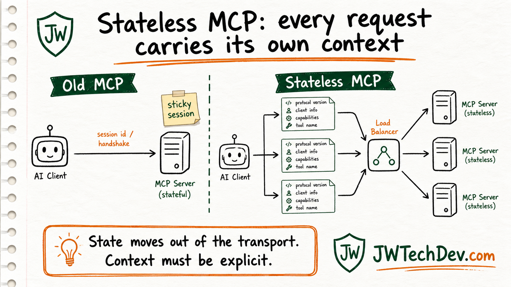

What stateless MCP means in plain English
MCP going stateless sounds like protocol plumbing. It is really a sign that AI tools are being forced to grow up into normal cloud infrastructure.

Quick answer
Stateless MCP means the protocol no longer depends on a hidden session between the client and server. Each request carries what the server needs, so the request can land on any healthy server instance.
What changed
In the older MCP flow, the client initialized a session, the server returned an Mcp-Session-Id, and later requests depended on that session still existing. That can work locally, but it creates pain when you try to run remote MCP servers like normal production services.
In the 2026-07-28 MCP specification, the protocol removes the initialize handshake and protocol-level sessions. Protocol version, client identity, and capabilities move into request metadata. Method and tool names also travel in HTTP headers, which makes routing and authorization easier for gateways.
The important mental model: the server should not need to remember the transport session to understand the next request.
Why it matters
This is the same lesson web apps learned a long time ago. If request two must hit the exact same server as request one, you need sticky sessions, shared session stores, or custom routing. That makes scaling harder and failure recovery uglier.
Stateless MCP lets a request go through ordinary HTTP infrastructure. A load balancer can route it to any available server instance because the request brings its own context. That is better for scaling, deploys, retries, and serverless-style hosting.
For our audience, the lesson is bigger than MCP: serious AI systems are not just prompts. They are identity, context, tools, routing, logs, approvals, and rollback thinking.
What builders should learn
- HTTP basics: requests, responses, headers, status codes, retries, and why stateless services scale.
- Load balancing: why routing to any healthy instance is simpler than pinning a user to one server.
- Explicit context: what the model, client, and tool server need to know on every call.
- Tool permissions: which tool calls are read-only, which modify state, and which need approval.
- Durable state: if the workflow needs memory, put it in a database, object store, queue, or explicit handle instead of hiding it in the transport.
Watch outs
Stateless does not mean your whole application forgets everything. It means the protocol is no longer the place where hidden session state lives. If an agent needs to keep working on a task, the system should use explicit handles, task IDs, database records, or other durable state.
That is good design, but it also forces discipline. If your MCP server changes something important, the workflow still needs logs, idempotency, human approval for risky actions, and a recovery path when a later tool call fails.
The clean version is: make requests self-contained, make state explicit, and make side effects reviewable.
Sources checked
Want the starter kit?
Grab the free JWTechDev.com starter kit if you want a practical way to connect cloud basics, AI workflows, and approval gates.
Get resources